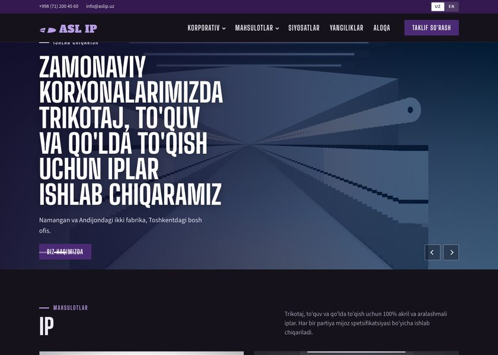
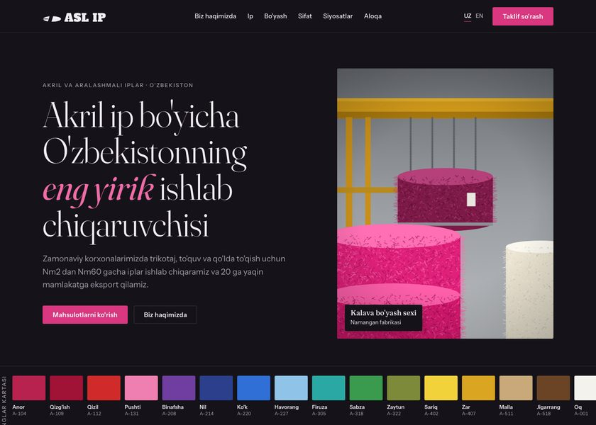
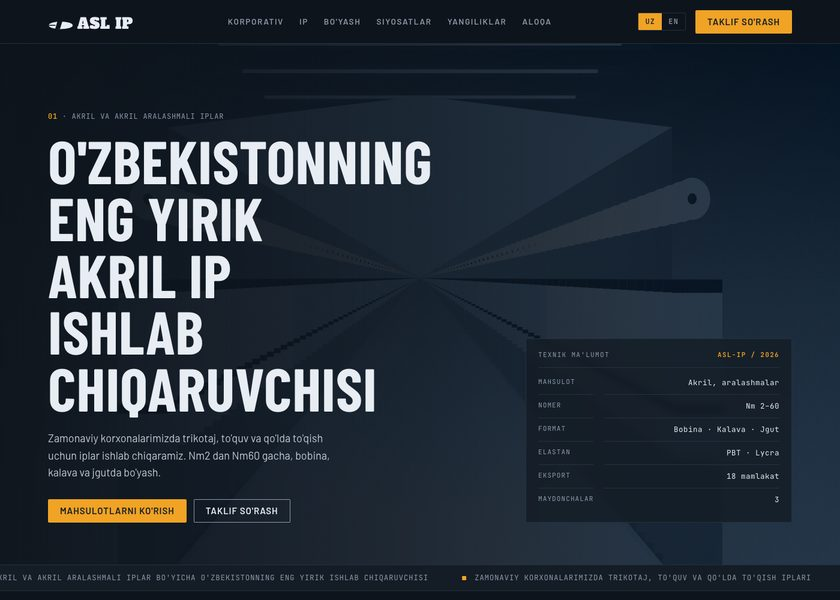

Uchta sayt konsepti · Three site concepts. Har bir sahifada UZ / EN tilini almashtirish mumkin · Each page has a UZ / EN switch in the header.

Korporativ uslub, slayder, binafsha brend rangi · Corporate look, slider hero, violet brand colour. Closest to the reference layout.
Ochish · Open →
Yengil, jurnal uslubi, ranglar kartasi · Light editorial look with a serif display face and a yarn shade-card ribbon.
Ochish · Open →
Qorong'i texnik uslub, spetsifikatsiya jadvallari · Dark spec-sheet look with a yarn-count ruler and datasheet panels.
Ochish · Open →